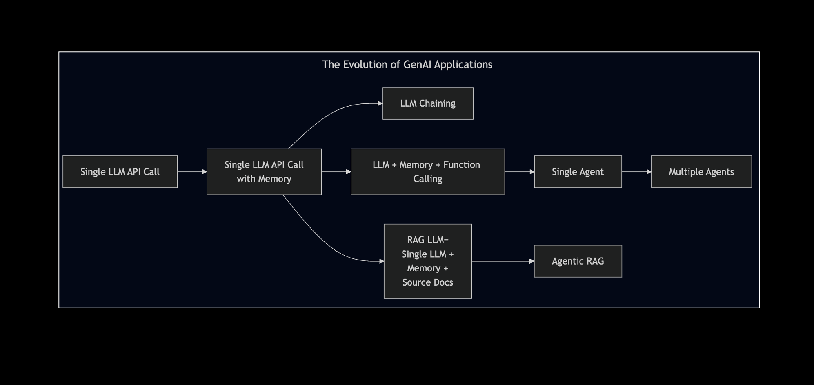

Motivation of the Talk
- Before jumping onto the Agentic AI bandwagon,
could we reflect on the evolution that led to the current Agentic AI era?
Agenda of this Presentation in a Picture

Agenda
- Evolution of GenAI Applications
- Stream Processing LLM Applications
- Batch Processing LLM Applications
- Detour: The Evolution of Reasoning in LLMs
- Agentic Applications
- What the Experts say?
Agenda
Agenda
- Evolution of GenAI Applications
- Stream Processing LLM Applications
Data processed in real-time
- Batch Processing LLM Applications
Data collected and processed in batches
- The Evolution of Reasoning in LLMs
- Agentic Applications
- Almost all agentic apps are streaming LLM applications
- Some agentic apps do process data in batch, at least in the background!
Section 1
Stream Processing LLM Applications
- A Single LLM API Call Response
- A Chatbot with Contextual History
- A RAG Chatbot
LLM Application with a Single LLM API Call

- 1 LLM call per response
- Your query fits into a set prompt of the selected LLM model
Chatbot Application with a Single LLM API Call
- Adds contextual history to prompts, enhancing conversational memory.
- Still makes only one LLM call per message, but simulates continuity.
- Chat history is stitched manually into each prompt (stateless memory).
Image Inspiration: Jay Alammar’s Hands-on Large Language Models
RAG Chatbot (1/2)
- Embeddings + vector search = more accurate and context-aware responses.
- A powerful architecture for grounding answers in known data sources (better for avoiding hallucinations)
RAG Chatbot (2/2)
- Converts raw documents (text/images) into semantically rich embeddings.
- Embeddings are indexed into a Vector DB for fast similarity search.
- Document chunking improves search granularity and retrieval accuracy.
- Better your chunking, better is the accuracy of answers
- Better the embeddings in encoding meaning, better is the accuracy of answers
LLM RAG vs Agentic RAG
- Jumping a few steps here but we will circle back to Agentic RAG

2. Batch Processing LLM Applications
Section 2
Batch Processing LLM Applications
- A Text Classification Application
- with 1 LLM API call per datapoint
- A Chained LLM Application
A Typical Batch Processing LLM Application
- Context or instructions can be dynamically adjusted via prompt templating
- External context can be modularized to avoid long, hard-coded prompts
- All data in the same batch use the same prompt template
A Text Classification Application

- Processes multiple data items (e.g., documents) using the same LLM pipeline.
- Scales LLM use to bulk operations like NER tagging or classification.
A Chained LLM Application (1/2)

- Uses chained prompts where the output of one LLM call feeds into another.
- Demonstrates how logic can be split into reusable, modular steps.
A Chained LLM Application (2/2)

Detour Section -
The Evolution of Reasoning in LLMs
- Prompt Engineering Approaches - In Focus - CoT and ReAct
- Large Reasoning Models <– Are there any takers?
How Prompt Engineering Started

- As the context window of LLMs improved,
- Input-Output Prompting evolved into Few Shot Prompting for better results
Reasoning Prompts - CoT & ReAct Prompts in Few Shot Style
- Explaining LLMs to think/reason step by step with examples
Reasoning Prompts - CoT & ReAct Techniques During Inference

- Explaining LLMs to think/reason step by step with examples
Structured Function Calling - A Robust Alternative to ReAct
- The structured JSON that LLM generates
{
"function": {
"name": "search_web"
},
"parameters": {
"query": "capital of Japan"
}
}Structured Function Calling - OpenAI Example
#0. Implement the tool
def search_web(search_query)
...
...
return tool_answer
# 1. Describe the tool
tools = [
{
"type": "function",
"function": {
"name": "search_web",
"description": "Searches the web for a factual answer to a question.",
"parameters": {
"type": "object",
"properties": {
"query": {
"type": "string",
"description": "The question or term to search for"
}
},
"required": ["query"]
}
}
}
]
# Step 2: Pass the prompt query to the OpenAI
# Let OpenAI decide if it wants to use the tool
messages = [
{"role": "user", "content": "What is the capital of Japan?"}
]
response = openai.ChatCompletion.create(
model="gpt4o",
messages=messages,
tools=tools,
tool_choice="auto"
)
# Step 3: Execute the Tool Call
tool_call = response.choices[0].message.get("tool_calls", [None])[0]
if tool_call:
function_name = tool_call.function.name
arguments = eval(tool_call.function.arguments) # or use `json.loads`
# Step 4: Simulate calling the function (you’d implement it)
if function_name == "search_web":
query = arguments["query"]
tool_result = search_web(query)
# Step 5: Append tool response and ask model to finish
messages += [
response.choices[0].message,
{
"role": "tool",
"tool_call_id": tool_call.id,
"name": function_name,
"content": tool_result
}
]
final_response = openai.ChatCompletion.create(
model="gpt4o",
messages=messages
)
print("ü߆ Final Answer:", final_response.choices[0].message["content"])
else:
print("üí¨ Direct Answer:", response.choices[0].message["content"])ReAct vs Structured Function Calling
| Feature | ReAct (Prompt Text) | Function Calling (Structured JSON) |
|---|---|---|
| Output Format | "Action: Search('capital of Japan')" |
Structured JSON with function + args |
| Parsing Required? | ❌ You parse the text manually | ✅ Handled by OpenAI, LangChain toolkit |
| Execution Clarity | ❌ Model can hallucinate tool syntax | ✅ Only valid, defined tools used |
| Model Adherence | üü° You ‚Äúhope‚Äù it follows format | üéØ You give it tool schema (e.g.: OpenAPI) |
| Robustness for Development | ❌ Fragile | ✅ Very reliable and scalable |
Large Reasoning Models
- LLMs: input → LLM → output statement
- LRMs: input → LRM → Keeps Planning Steps → Finally, output statement
- LRMs are generating text similar LLMs but they are trained to “think before acting”
- E.g.: OpenAI o1, DeepSeek R1
- LRMs think during inference, hence needing more “test-time compute”
Source 1: Aishwarya Naresh’s Substack
Source 2: A Visual Guide to Reasoning LLMs
Recap
- We have discussed the following so far:
- How LLMs are used in streaming and batch application
- How LLMs work with Tools and RAG setup
- How LLMs think (planning/reasoning/reflection,etc.,)
- In Agentic AI, we put the above concepts together
Section 3 -
Agentic AI Applications
- Components that comprise an Agent
- Architecture of a Single Agent
- What do these protocols - MCP and Google’s A2A - mean?
- Real World Agents - ChatGPT vs Perplexity vs DeepResearch
- What are Multi-Agent Systems
- What do the Experts say?
What are Agents?
- LLMs generate text
- Agents generate text and also perform actions
- Chatbot = LLM + Memory
- RAG Chatbot = LLM + Memory + Vectorized(Source Docs)
- Tool LLMs = LLM (brain) + Function Calling (hands)
- Agent = LLM + Tools + Memory + Planning (next steps, state management)
- Agent = Engineering Wrappers around LLMs
Source for the perspective - “Engineering Wrappers around LLMs”:
Aishwarya Naresh in Substack
Architecture of a Single Agent
Example of a Single Agent Application
Agentic RAG
- Agentic RAG is not one-shot retrieval.
- The Agent retrieves, then reflects on the result, re-fetches if necessary
Where does MCP fit here?
Before MCP:

After MCP:

Source of the amazing images: Norah Sakal Blog Post
Where does MCP fit here?
- MCP - Not just a package or library (well it has a python package!).
- It is a protocol like TCP/SMTP. It is like OpenAPI Spec for REST APIs. source of the analogy
- MCP standardizes how the context (prompt, tools, memory, retrieved docs, etc.,) get passed on to the Model.
Source of the amazing image: Hirusha Fernando Medium Article
Real World Agents - ChatGPT vs Perplexity vs OpenAI DeepResearch
- ChatGPT: General Purpose Conversational AI whose knowledge is limited to the time of training data
- Perplexity: Google (Search Engine) + ChatGPT (Conversational AI)
- Generates text as an answer with sources for every portion
- Deep Research: An Agentic RAG with WebSearch (& other tools) and Multi-step reasoning source
Multi-Agent Systems

- Agents operate in parallel with their own responsibilities.
- Shared memory is used for cross-agent communication.
- Tool usage and autonomy allow scalable, modular problem-solving.
Conclusion
What the Experts Say? (1/2)
- “Let us build a Multi-Agent System” - ❌ a wrong view to start with
- ✅ “What are we trying to solve”
- Simpler systems are better:
- RAG LLM Chatbot >> Agentic RAG
- LLM + Function Calling >> Single Agent
- Single Agent (with different “modes”) >> Multi Agents
- Have caution in using inference-compute-heavy Large Reasoning Models - the jury is still out!
What the Experts Say? (2/2)
- Observability:
- Capability to review logs of LLMs or Agents function is key to success
- Latency:
- Complex systems typically come with high Latency
- Evaluation:
- Accuracy: Have your test questions clearly prepared and tested!
- Cost: Have a tab on the token usage.
My Main Resources
- Mermaid Charts drawn from practical experience are collated here
- Extensive interactions with ChatGPT/ Perplexity for correcting/editing my mermaid charts
- The 10 Article Substack Piece by Aishwarya Naresh - The Nuanced Perspective
- O’reilly Course on Modern Automated AI Agents